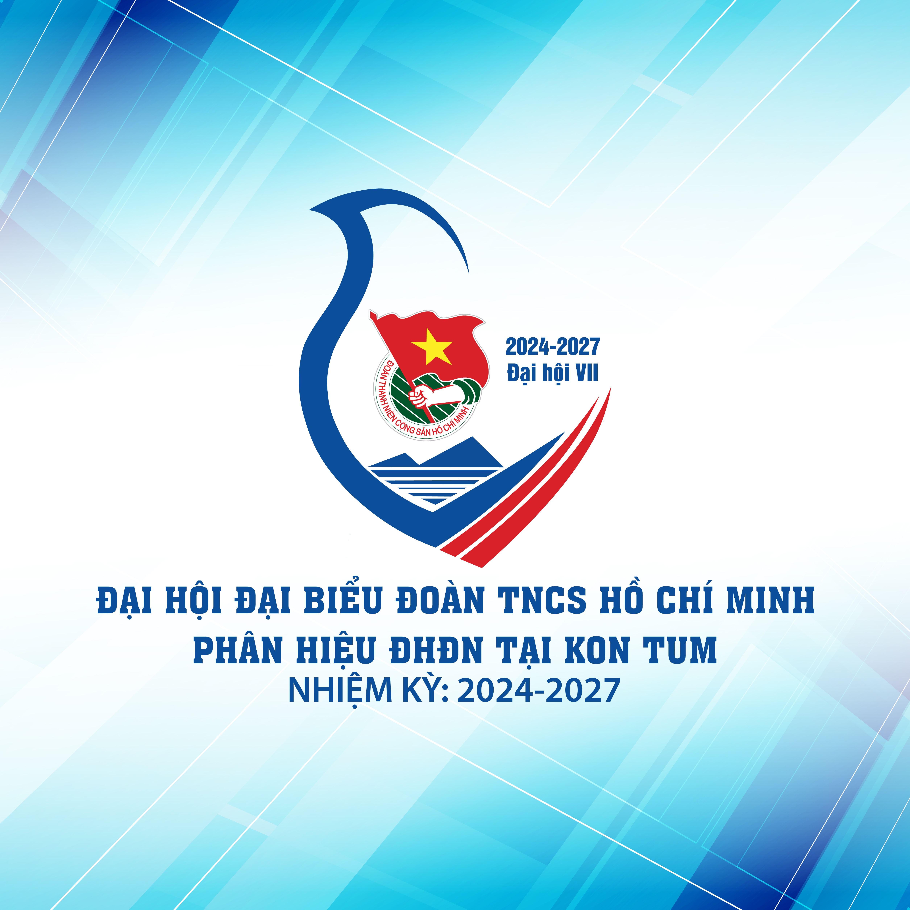

| Nom: | Bobo |
| Prénom: | Eddy |
| Date de naissance: | 20/12/2028 |
| Adresse: | 5, rue de la mer |
| Code Postal: | 34822 |
| Ville: | Pompadour |
| Situation matrimoniale: | Marié |
| Enfants: | 2 |
Mon domaine d'intervention est la traduction en Esperanto. J'ai pratiqué cette activité lors de mon stage sur le porte-avion civil Europa.
Mes loisirs favoris sont l'escalade en roller et la chute libre en VTT sans parachute. Je pratique ces sports en famille depuis mon enfance. Je recherche un emploi me permettant de me libérer les jours de beau temps.
